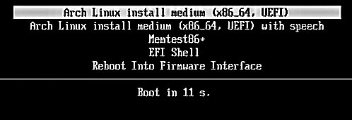

Now We will see How to get, starting from the UEFI BIOS to the Installation Command Line.
Step 1 Insert You Installation Media
Step 2 Power on your PC and Hold the Del or the key for entering into the BIOS and Select your Installation Media.
Step 3You should See this screen. Press Enter to To finally begin.
